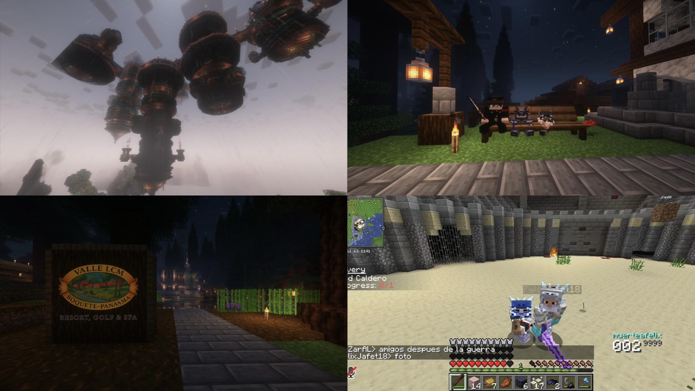
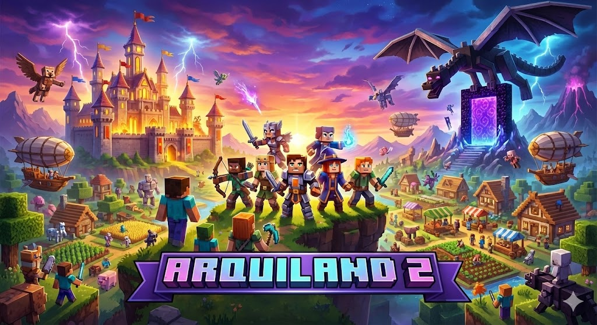

De una idea entre amigos a un mundo sin límites. Lo que comenzó como una simple
charla entre amigos,
ha evolucionado en algo mucho más grande. Arquiland no es solo un servidor de
Minecraft; es un
refugio para los que buscan la esencia pura del juego.

Temporada 1: El Comienzo
La primera temporada de ARQUILAND marcó el inicio de una gran aventura.
Los jugadores construyeron ciudades épicas, formaron alianzas y crearon
historias
que quedarán en la memoria del servidor para siempre.
Momentos Épicos
El Gran Juicio, eventos especiales, construcciones y destrucciones monumentales
hicieron de ARQUILAND un servidor único. Cada momento fue una nueva historia
que los jugadores compartieron juntos.

Temporada 2: El Regreso
ARQUILAND ha regresado más fuerte que nunca. La Temporada 2 trae nuevas
aventuras, nuevos desafíos y la oportunidad de crear recuerdos inolvidables
en un servidor renovado.